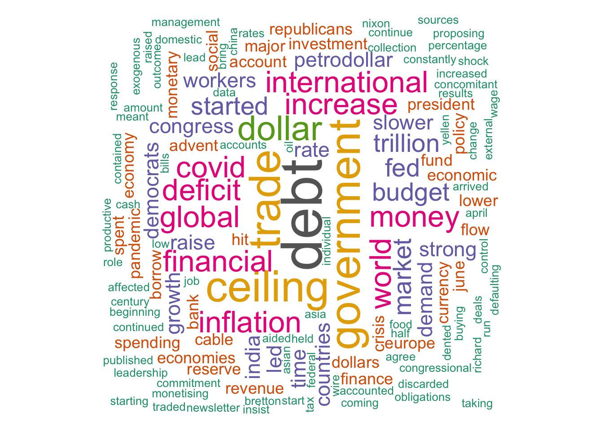
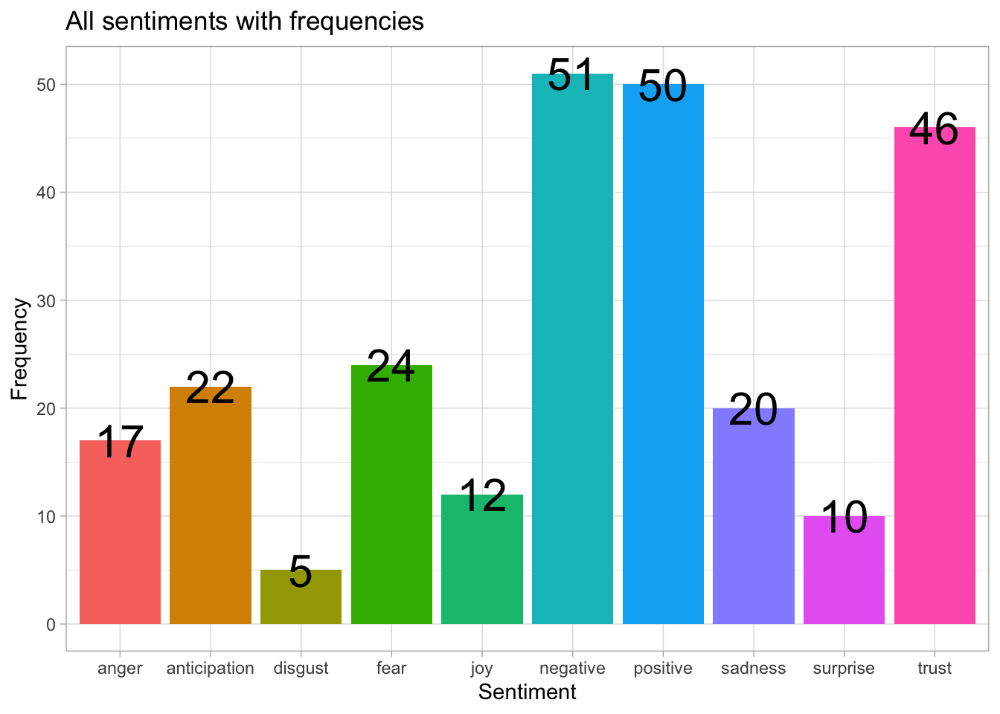

library(tidyverse)
library(tidytext)
library(rvest)
library(textdata)
library(wordcloud)
library(RColorBrewer)
library(wordcloud2)rvest package to scrape and extract text from a websiteurl <- 'https://thewire.in/world/us-debt-ceiling-explained'
news <- read_html(url)text <- tibble(
news %>%
html_elements('p') %>% #it selects all paragraph elements (<p>) from the HTML content
html_text()
) %>%
rename( 'text' = 1) # rename the colum to "text"sentiments <- get_sentiments('nrc')tokens <- text %>%
unnest_tokens(input = text,output = word)%>%
filter(!grepl('[0-9]', word)) #remove numbersword_freq <- tokens%>%anti_join(stop_words) %>%
count(word, sort=TRUE)## Joining with `by = join_by(word)`set.seed(1234)
wordcloud(words = word_freq$word,
freq = word_freq$n,
min.freq = 1,
max.words=150,
random.order=FALSE,
rot.per=0.40,
colors=brewer.pal(9, "Dark2")
)
wordcloud2(
data = word_freq,
#size = 1.0, # Size of words
color = "random-dark", # Color scheme
backgroundColor = "white", # Background color
fontFamily = "Arial", # Font family
minRotation = -pi/4, # Minimum rotation angle
maxRotation = pi/4 # Maximum rotation angle
)freq_count <- tokens %>%
inner_join(sentiments, by='word', multiple = "all") %>%
count(sentiment, sort = TRUE)gg <- freq_count %>%
ggplot( aes(x= sentiment, y= n,
fill= sentiment) ) +
geom_col(show.legend = F) +
geom_text(aes(x= sentiment, y= n, label=n), size=8) +
labs( x= 'Sentiment',
y= 'Frequency',) +
ggtitle('All sentiments with frequencies')+
theme(plot.subtitle = element_text(color = "gray", face = "italic")) +
theme_light()
gg